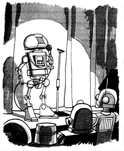

The Best of RHF
|
 "Greetings, fellow constructs. I just flew in from Data-Comp III, and boy are my upper limb units unfit for further service." |
Before reading, you may wish to read the introduction to the archive.
There are a lot of jokes here -- almost 2,000. We think all of them are good for at least a smile, having been culled from 6,000 postings and tens of thousands of submissions. Don't read them all at once, though (even if you can). Read our notes on how to read a joke collection. If you find you want to read them all, you may wish to order the books instead.
We also are presenting these old classics, at rate of two per day, on the RHF jokes of the day page. You may find that a good way to read them.
For the new jokes, of course, just read the newsgroup. Don't forget, this is not a joke archive for children.
Beside each topic, you will see a link marked (Random Pick). You can click on this link to read a randomly selected joke from the category area.
Please patronize our sponsor:
The Topic Areas